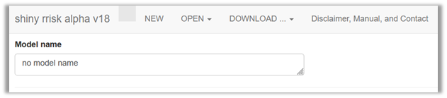

Distribution fitting
Your quick start to using shiny rrisk distributions
Getting started (srr)

The top row of the app displays the version of the app and provides basic functionality for managing models (Figure 1).
| NEW | Click here if you wish to create a new model and assign a Model name. |
| OPEN | Open a saved model or one of the demo models implemented in the tool. The extension of model files is “rrisk”. |
| SAVE | Download the model, results or the model report to your local system. |
| ABOUT | Check out here for a disclaimer, manual and contact information. |
The app runs on a server provided by the German Federal Institute for Risk Assessment (BfR). Your data is not accessible to BfR or any other party and irretrievably lost upon termination of the browser session or interrupt of the server connection. It is highly recommended that you Save your model regularly after each important modification.
- We recommend using “\(<\)agent\(>\)in\(<\)commodity\(>\)” as standard format for naming models.
- We recommend discussing the model concept with stakeholders (see tip below) in order to clarify the task and available data and resources.
First things first
Before developing a mathematical or probabilistic model it is advisable to clarify some important points.
- What is the question you wish to answer?
- What is the starting point and final outcome of the scenario you wish to model?
- What are the relevant/influential events and pathways?
- What are the relevant populations and subgroups to be considered?
- If exposure factors and disease statuses are involved, are there accepted case definitions available?
Building blocks of a model
A probabilistic risk model typically represents a series of events or situations that can be linked together in a logical or chronological order, whereby the final event represents the outcome of interest. For example, consider the hypothetical shipment of one race horse from Argentina to Germany. The task is to quantify the probability of the horse to be infected with equine infectious anemia (EIA, see FLI, 2017, accessed 9.5.2025). Note that this example is for illustration only. Each building block of the model requires clarifications and definitions which are tailored to the specific problem at hand. Some of the clarifications can only be provided by the customer (risk manager) and others by domain experts risk assessors. For larger projects, stakeholders should be involved in this process.
- Risk question: defines the outcome of interest; what is the probability that the introduced horse is infected with EIA virus?
- Scope: defines what is included or excluded from the assessment; here economic and epidemiological consequences are beyond the scope.
- Pathway and scenario: define all relevant steps and events; here the selection of the horse, legal and sanitary transport requirements, transport, border health checks shoud be considered.
- Model parameters (denoted “nodes” in shiny rrisk): define all input and output quantities required in the model; here the minimum set of parameters include the prevalence of EIA in Argentina, the probability of infection at boarding and the probability of infection at introduction of the animal after de-boarding formalities. Additional parameters may apply.
- Components of the model: may structure the parameters into logical groups which makes it easier to discuss the model with individual domain experts and provides a useful structure of the report; typical components for a larger import risk models include the entry assessment, exposure assessment, consequence assessment and risk estimation (see OIE, 2018, accessed 9 May 2025).
Visualisation
It is recommended to sketch a visual representation of the conceptual model. The flowchart for the simple example above (Figure 2) may support the discussion about required data and additional nodes such as for diagnostic testing.